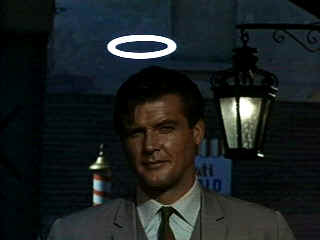

| Saint,The (TV)/B,B |
| A & E/1966/155/FS 1.33 |
Some television shows that sported popular appeal passed me by without so
much as a glance. The Saint, the pre-Bond Roger Moore vehicle, was just one of a legion of
television programs that fit into that category. Now, A & E was begun a roll out of the show
and I sat down to see what I was missing.
The first 2 DVD disc set contains six saintly episodes all running approximately
52 minute each. The Saint plied his Swiss knife style for 118 episodes beginning in 1962 and
winding up in 1969. Part cat burglar, part detective, Simon Templar aka The Saint originated
in the 1920's fiction of British writer Leslie Charteris. Known for his charm and suave, humorous
dialogue, The Saint was a natural for adaptation to the screen. The character has appeared
in ten feature films, most recently with Val Kilmer in the title role donning numerous embarrassing
disguises. The television series was filmed in black and white until 1966 when the producers
switched exclusively to color production.
 |
| Moore glows as The Saint. ©A&E |
I watched the three episodes on DVD 1. The Queen's Ransom, the first of the color
episodes, is a clunky execution formed mostly by a series of chases and confrontations with the bad
guys. It relies chiefly on supposedly snappy byplay between Templar and a former British fashion
model turned Middle East queen. When her husband, the deposed ruler, needs financing for a return
to power, the Queen's jewels must be transported from the safety of a Swiss bank into the hands of
the King. Dawn Addams is awkward as the Queen while Moore does his level best to loosen her up.
I did not expect much from Interlude in Venice, the second episode
included in the set. Happily, my anticipated boredom never materialized. This one is colorful,
plays consistently well and is filmed with far more polish than the first. There's some local
casino action, a hot local dish and a count for a hollow title,, a gangster in exile and rich
dysfunctional American family trying to stay out of the dirty Venetian waters. When the attractive
young American woman finds more than her chastity in jeopardy, Templar steps up to purify the
water. It's fun to see Lois Maxwell, the perennial Miss Moneypenny to James Bond in the role of the
stepmother. Moore is smooth.
The third episode is likewise well done and plays like a blue print
for a modern espionage full length flick. A Russian scientist would like to join his daughter in
the free world. When he accompanies a trade mission to Switzerland, the Russian attempts to escape
but is shadowed by local Russian agents. There are some twists and turns long the way and Templar
needs to stay on his toes. A good deal of fun.
The transfers are made from good source material. Color is well preserved and
reasonably nicely. Contrast range is fine with good shadow detail in the night sequences. Blacks
are deep. The image is consistently sharp. The dialogue is clear and the music
delivered without distortion.

Screen legend Gary Cooper
won two Academy Awards© as Best Actor during a career that included 114 Hollywood films. Click on
his image for a bio and poster images.

DVD packaging can be the bane of the collector. Click on Rants and
Raves for more.
The DVD Package

Not
One Less
 In a remote
Chinese village a 13 year old Chinese girl takes determination to the limits. From master filmmaker
Zhang Yimou.
In a remote
Chinese village a 13 year old Chinese girl takes determination to the limits. From master filmmaker
Zhang Yimou.

 Have you visited Home Theater
Talk lately? One of the friendliest places on the Net for Home Theater and DVD discussion, you
can get help for installation problems or simply share your opinions with other Vidiots.
Have you visited Home Theater
Talk lately? One of the friendliest places on the Net for Home Theater and DVD discussion, you
can get help for installation problems or simply share your opinions with other Vidiots.

Terrific resource for learning about the ins and outs of movie
poster collecting.
 ETEKNet is the web's only 24-hour, totally FREE source for all your home theater,
DVD, Dreamcast, PC, and Networking tech support needs!
ETEKNet is the web's only 24-hour, totally FREE source for all your home theater,
DVD, Dreamcast, PC, and Networking tech support needs!

DVD news, reviews, forums: Jump right in!

A love of movies drives this small DVD production
company, Synapse Films. Currently
specializing in horror and cult films. Watch for new DVD releases of film festival independents as
Synapse branches out.